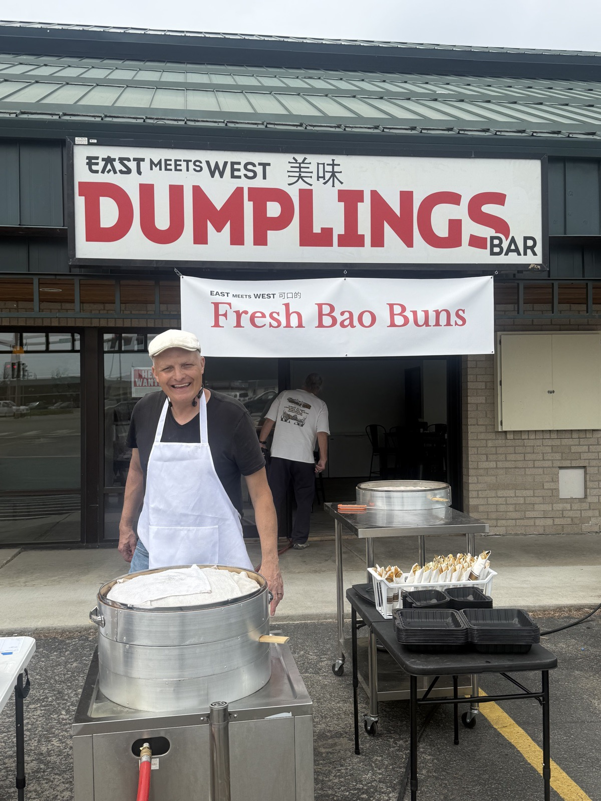

Our Story
About East Meets West LLC.
Several years ago, at potluck social dinners, I began to notice that food lines would invariably merge to my wife's Chinese dumplings line, and thought Americans might enjoy this delicious food if we could commercialize these ancient recipes. After nearly two years of substantial research and development — with many failures — we believe that we have created an authentic product that many Americans will enjoy.
All of the recipes are authentic and likely passed down through many generations of my wife's Mongol and Haan ancestry near the Mongolian and Russian border in Northern China.
Along with our authentic line of dumplings, in future months we plan on introducing an Americana line of dumplings under the mantra: "Of course Americans change everything, even food." Some initial ideas are Memphis Sweet BBQ dumplings as well as other innovations.
We hope that you enjoy these traditional Chinese recipes as much as we do.
"Nothing is more important than the food."
— Richard, Chef